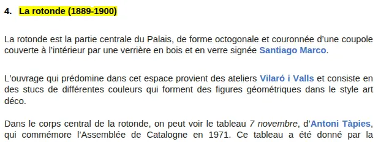
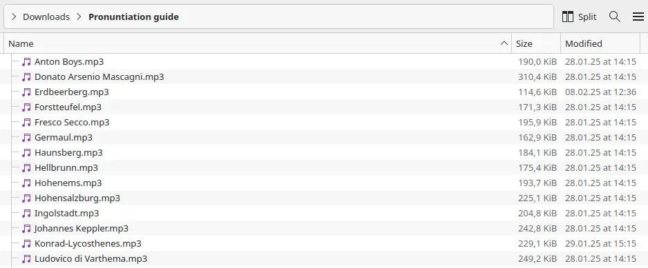

Das Problem, vor dem Sie niemand warnt
Auch professionelle Sprecher geraten bei fremdsprachigen Eigennamen schnell an ihre Grenzen. Ein deutscher Sprecher, der wegen seiner warmen Stimme und seiner klaren Aussprache engagiert wurde, hat sein gesamtes Berufsleben in deutscher Sprache verbracht. Möglicherweise ist er noch nie auf die Namen flämischer Meister, spanischer Bildhauer oder japanischer Grafikkünstler gestoßen. Ein französischsprachiger Sprecher, der für ein britisches Museum aufnimmt, wird „Monet“ ohne zu zögern aussprechen, könnte aber bei Turner, Constable oder Hepworth schwer ins Straucheln geraten. Und Ortsnamen verschärfen das Problem noch: Derselbe Audioguide, der Zurbarán erwähnt, könnte auch Sevilla, Extremadura und ein halbes Dutzend spanischer Dorfkirchen nennen – jede mit ihren eigenen phonetischen Fallstricken für einen Nicht-Muttersprachler.
Die Schwierigkeit steigt mit der kulturellen Spezifität. Ein Audioguide für ein Museum mit internationaler Sammlung wird schnell zum Minenfeld aus fremdsprachigen Eigennamen. Ein Audioguide für ein regionalhistorisches Museum ist zwar weniger anspruchsvoll, aber selten problemlos: Lokale Ortsnamen, regionale Dialekte und historisch spezifische Aussprachen können ebenso knifflig sein.
Die meisten Produktionsabläufe berücksichtigen dies überhaupt nicht. Das Skript geht an den Sprecher, dieser nimmt es auf, und die Fehlaussprachen treten erst bei der Qualitätskontrolle zutage – oder schlimmer noch, werden von einem muttersprachlichen Besucher bemerkt, der vor der Ausstellung steht.
Warum die Standardlösungen nicht funktionieren
Die beiden gängigsten Ausweichansätze weisen jeweils einen gravierenden Mangel auf.
Das Internationale Phonetische Alphabet (IPA) ist theoretisch universell und phonetisch präzise – in der Praxis jedoch im Wesentlichen nutzlos, es sei denn, Sie arbeiten mit einem ausgebildeten Linguisten zusammen. Die meisten professionellen Sprecher arbeiten im Studio nicht mit IPA-Transkriptionen. Einen Sprecher zu bitten, /ˌzʊərbəˈrɑːn/ zu entschlüsseln, bevor er die Aufnahmetaste drückt, führt zu unnötigem Aufwand, Unsicherheit und manchmal sogar zu regelrechter Panik in einem Prozess, der eigentlich reibungslos verlaufen sollte. Wir haben auch in unserem Produktionsworkflow für KI-Stimmen mit IPA gearbeitet und selbst dort inkonsistente Ergebnisse festgestellt: Die Technologie unterstützt dies zwar grundsätzlich, doch um eine korrekte Ausgabe zu erzielen, sind nach wie vor Geduld und Fachwissen erforderlich, über die die meisten Produktionsteams nicht verfügen.
Der andere gängige Ansatz – die Aussprache der eigenen Recherche des Sprechers zu überlassen – scheitert aus einem anderen Grund. Er geht davon aus, dass der Sprecher Zeit in die Suche nach der korrekten Aussprache investiert, weiß, wo er nachschlagen muss, und ein falsches Ergebnis erkennt, wenn er es hört. In der Praxis nehmen Sprecher unter Zeitdruck eine Annäherung vor. Wenn sie einen Namen falsch aussprechen und niemand ihnen eine Anleitung gegeben hat, gibt es keine berechtigte Grundlage für die Forderung nach einer Neuaufnahme.
Was wir stattdessen tun
Bei Nubart GUIDE wird ein Skript, sobald es fertiggestellt und genehmigt ist, von unserem Produktionsteam geprüft, bevor es überhaupt an einen Sprecher gelangt. Jeder Eigenname – Künstler, Architekt, historische Persönlichkeit, Ort – wird im Hinblick auf mögliche Ausspracheprobleme in Bezug auf die Muttersprache des Zielsprechers gekennzeichnet. Dies ist ein entscheidender Unterschied: Dasselbe Wort muss in einer Sprachversion möglicherweise gekennzeichnet werden, in einer anderen hingegen nicht. „Wilhelmshöhe“ bleibt im deutschen Skript unmarkiert. In den französischen, englischen und japanischen Versionen wird es markiert. „Zurbarán“ ist für einen spanischen Sprecher unauffällig und für fast alle anderen ein ernstes Problem.
Für jedes markierte Wort erstellen wir eine kurze Audio-Referenz: eine Aufnahme des Wortes, das zunächst in normaler Geschwindigkeit und anschließend mit Betonung auf jeder einzelnen Silbe deutlich ausgesprochen wird. Die Dateien folgen einer einfachen, aber wichtigen Konvention:
- Eine MP3-Datei pro Wort, benannt nach dem Wort selbst —
Zurbarán.mp3,Hepworth.mp3,Eyck.mp3 - Alphabetisch geordnet in einem gemeinsamen Ordner neben dem Skript gespeichert
- Im Word-Dokument blau markiert, damit der Sprecher sie beim Lesen sofort erkennt

Das Ergebnis ist, dass der Sprecher einen farblich hervorgehoben Begriff mitten im Skript sieht, den freigegebenen Ordner öffnet und die entsprechende Datei in Sekundenschnelle findet – ohne durch eine lange Referenzaufnahme scrollen oder in Fußnoten suchen zu müssen. Das Nachschlagen dauert nur wenige Sekunden und unterbricht den Aufnahmefluss praktisch nicht.

Wir senden das Skript als Word-Dokument und nicht als PDF. So kann jeder Sprecher Schriftgröße, Zeilenabstand und Layout an seine eigenen Arbeitsgewohnheiten anpassen – was wichtiger ist, als es auf den ersten Blick erscheinen mag. Sprecher haben fest eingespielte Aufnahmeroutinen, und ein Skript, das sie nicht an ihre Arbeitsumgebung anpassen können, sorgt für unnötige Reibungsverluste, noch bevor ein einziges Wort aufgenommen wurde.
Diese Referenzdateien werden mit Muttersprachlern erstellt, wenn es sich um Standardaussprache handelt, und vom museeneigenen Team, wenn regionale oder institutionelle Konventionen gelten. Dieser letzte Punkt ist wichtig: Ein Ortsname kann eine offiziell festgelegte Aussprache haben, die sich von der tatsächlichen Aussprache der Einheimischen unterscheidet. Bei einem Audioguide erwartet der Besucher in der Regel, die lokale Konvention zu hören.
Diese Arbeitsweise hat sich bei uns nach zahlreichen Produktionen herauskristallisiert. Ursprünglich nahmen wir alle markierten Wörter in der Reihenfolge des Skripts in einer einzigen Audiodatei auf – theoretisch nützlich, in der Praxis jedoch umständlich, da der Sprecher während der Sitzung durch die Aufnahme springen musste, um ein bestimmtes Wort zu finden. Wir versuchten auch, Links zu einzelnen Dateien direkt in das Skriptdokument einzubetten, was technisch möglich, aber zu arbeitsintensiv in der Pflege war. Einzelne benannte Dateien in einem gemeinsamen Ordner erwiesen sich als die zuverlässigste Lösung.
So sieht dies in der Qualitätskontrolle aus
Nach der Aufnahme ist die Aussprache ein expliziter Prüfpunkt in unserem Überprüfungsprozess. Wir erwarten nicht, dass ein deutscher Sprecher ein phonetisch perfektes spanisches /r/ produziert oder dass ein französischer Sprecher das walisische /ll/ beherrscht. Der Standard, zu dem wir uns verpflichten – und der sich in unseren Allgemeinen Geschäftsbedingungen widerspiegelt – ist eine Aussprache, die im Wesentlichen korrekt ist: erkennbar und für einen muttersprachlichen Zuhörer nicht irritierend. Das ist eine erreichbare Messlatte, die durch eine ordnungsgemäße Einweisung zuverlässig erreicht werden kann.
In der Praxis haben wir, wenn eine Referenzdatei erstellt und geliefert wurde, klare Gründe, eine Neuaufnahme zu verlangen, falls das Ergebnis nicht den Anforderungen entspricht. War dies nicht der Fall – wie es bei Produktionen vorkommt, die wir nicht von Anfang an betreut haben –, entfällt diese Möglichkeit. Dies ist ein Grund, warum wir empfehlen, frühzeitig einen Produktionspartner einzubeziehen, noch bevor das Skript die Aufnahmephase erreicht.
Ein Wort zu Forvo und Online-Ressourcen
Bei weniger gebräuchlichen Wörtern konsultieren wir manchmal Forvo, eine Crowdsourcing-Aussprache-Datenbank mit Aufnahmen in Hunderten von Sprachen. Als erste Orientierung ist Forvo hilfreich, als letzte Instanz jedoch ungeeignet: Die Qualität der einzelnen Aufnahmen variiert erheblich, und manche sind schlichtweg falsch. Wir betrachten Forvo als Anhaltspunkt zur Überprüfung, nicht als endgültiges Urteil. Im Zweifelsfall ist eine kurze Aufnahme von einem Muttersprachler aus dem Team – oder von Mitarbeitern des Museums selbst – stets vorzuziehen.
Wie sieht es mit KI-Stimmen aus?
KI-Stimmgeneratoren haben bestimmte Aspekte der Produktion mehrsprachiger Audioguides schneller und zugänglicher gemacht. Die Aussprache fremdsprachiger Eigennamen gehört nicht dazu. Nach unserer Erfahrung bei der Produktion von Projekten, die mit KI-Stimmen statt mit professionellen Sprechern umgesetzt werden, gehören Künstlernamen und fremdsprachige Ortsnamen nach wie vor zu den häufigsten Schwachstellen – und im Gegensatz zu einem menschlichen Sprecher kann einer KI-Stimme keine Referenzaufnahme zum Lernen vorgelegt werden. Wenn die Aussprachegenauigkeit über mehrere Sprachen und kulturelle Kontexte hinweg für Ihr Projekt von Bedeutung ist, ist dies einer von mehreren Gründen, die Sie bei der Wahl zwischen KI- und menschlicher Sprachausgabe sorgfältig abwägen sollten. Wir haben über diesen Kompromiss ausführlicher in unserer Bewertung von KI-Stimmen für Museums-Audioguides geschrieben.
Was Museen ihrerseits tun können
Das Nützlichste, was ein Museum vor Produktionsbeginn bereitstellen kann, ist eine Liste mit Eigennamen, die ausländischen Sprechern möglicherweise unbekannt sind – vor allem Künstlernamen, aber auch Ortsnamen, historische Persönlichkeiten und jegliche sammlungsspezifische Terminologie. Drei Dinge sind dabei besonders hilfreich:
Ein Verzeichnis der Eigennamen: alle Namen von Künstlern, Architekten und Orten im Skript, die ein Nicht-Muttersprachler möglicherweise falsch aussprechen könnte. Sie benötigen keine phonetische Umschrift – nur die Liste.
Eine Sprachprüfung: Wenn ein Name in anderen Sprachen eine anerkannte, konventionelle Form hat (wie man sie im Sprachmenü auf Wikipedia findet), markieren Sie ihn. „Firenze“ und „Florence“ sind ein einfaches Beispiel; viele museumspezifische Namen sind weniger offensichtlich.
Eine Sprachreferenz: eine informelle Smartphone-Aufnahme, in der ein Kurator oder Mitarbeiter die schwierigen Namen laut ausspricht. Zwei Sekunden Audio sind nützlicher als eine Seite schriftlicher Anweisungen.
Die Museen, die diese Informationen zu Beginn eines Projekts bereitstellen, erhalten am Ende bessere Audioguides. Wenige Minuten Vorbereitung können später viele Stunden Korrekturarbeit ersparen.